1. Install Python
First thing first, we need to download the installer from the official website.
This is located at the url of https://www.python.org/downloads/. Once there click that big ole' "Download Python x.x.x" button.
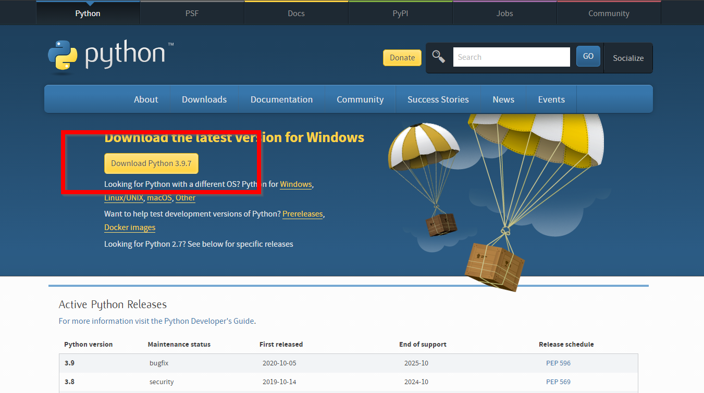
2. Check off "Add to PATH" (but don't tho)
Once the download is finished, go ahead and run the installer.
You'll see two options (at least at the time of writing this). The simple "Install Now" and the customized installation option.
For now, we'll choose the simple one. However be sure to note 2 things here.
- The installation path of python
- The checkbox of "Add Python X.X to PATH" (and make sure this is unchecked, we will configure this manually so you understand why it is important)
Go Ahead and click "Install Now" and accept any prompts windows pops up.
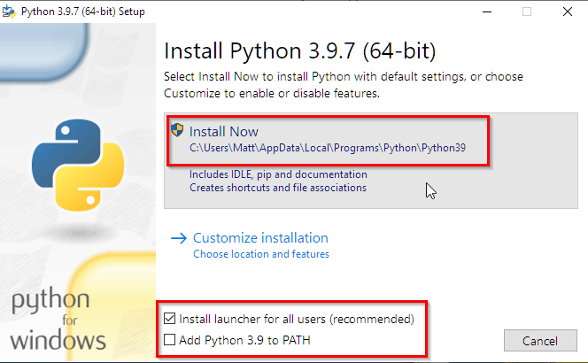
Once successful, you should get a message telling you everything went good.
One thing to note here is that if you do not have Admin permissions or read/write access in
the attempted install directory things can fail or you will be warned that Python will need to
be configured correctly. If this is the case, go follow another tutorial on how to get around your work/schools IT block (Sorry).
3. Take a look at the directories
To verify installation ourselves, lets take a look at what it installed.
If we navigate into the directory that we noted back in Step 2. We should see the following...
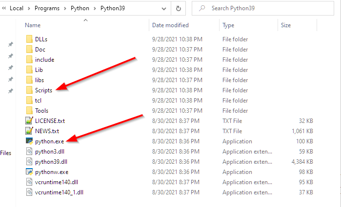
For this tutorial, there is two things of importance. The python.exe and the Scripts directory.
- The python exe is what we need to add to the windows PATH (also Scripts folder below). This allows us to open a command prompt and invoke python from anywhere.
- The Scripts folder. Initially this will only include pip. However pip will help us install other packages we will need/want if we plan on using any community libraries outside of the base python package.
PIP seems to have some debate on what the acronym truly stands for but the ones that seems most on-the-nose is "Preferred Installer Program". It essentially connects to PyPi and installs packages to your system so you can import them into your code and use them.
Before we add anything to the PATH, lets see how we can correctly (and incorrectly) call Python from the Command Line.
First lets start up a blank terminal by opening the start menu and typing in "cmd". Choose the "Command Prompt".
Once this is open type in a command to validate python. There are a few easy ones, and one I use is "python --version".
If python was on the PATH, we should see a version number be output below our command. However since we have not done that, we'll get a message like this...
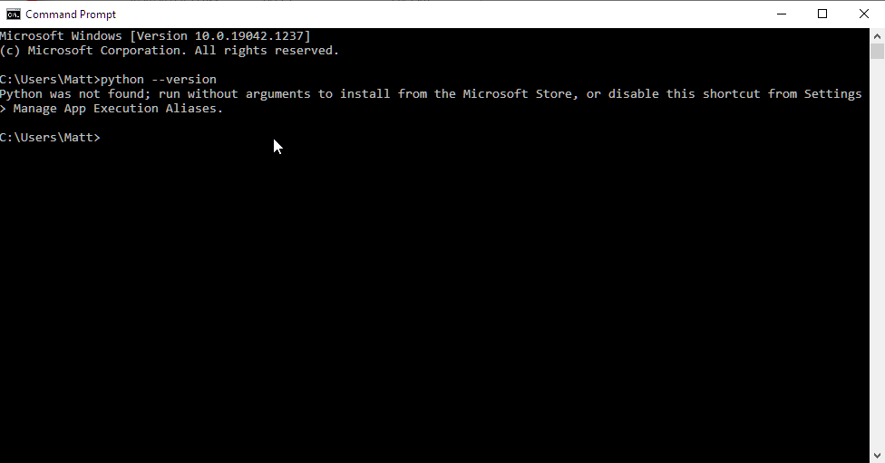
However if you do get a version, that means you already have some version of Python configured to your PATH. (Or you just so happended to install python to your root user directory. If this is the case, then you may not need this tutorial. Or delete all installed versions of python and restart)
It is worth noting that just because you haven't configured python to your PATH, doesn't mean it isn't usable. We can actually go into the installed directory and invoke the .exe from there.
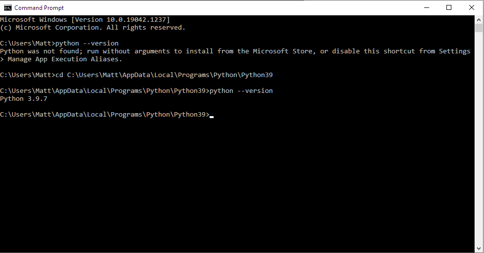
Here you can see I changed my directory into the directory in which I originally installed Python and invoked it from there.
The next step, we will add this directory path to the window's PATH variable so we do not need to do this every time we want to use python on the command line (along with other reasons).
4. Configure the PATH manually
Now that we've verified Python is installed correctly and know the two paths we have to add to the path, lets go ahead and do that to see the change.
First open the start menu and type "environment variables". Click n the "Edit the system environment variables" suggestion. This will pop open a window like this...
 Click on the Environment Variables button shown above. Note the following screenshot for the variable we will need to add to...
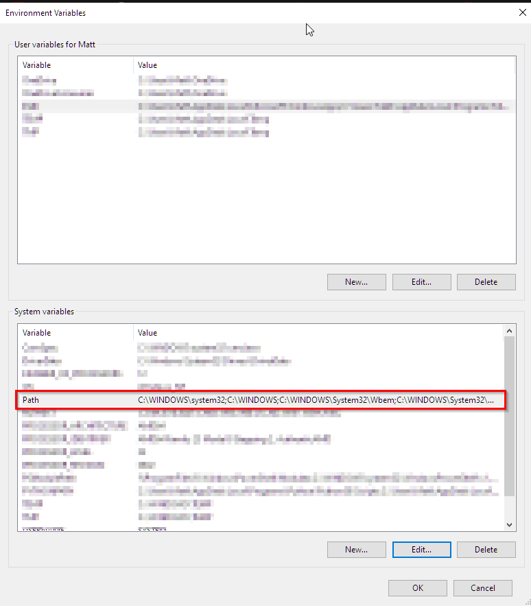
The variable we're interested in is the "Path" variable. Highlight the selection and click "Edit...".
Once the edit screen is up, click on "New" and paste in the two things we noted earlier, the directory that holds the python.exe and the Scripts folder...
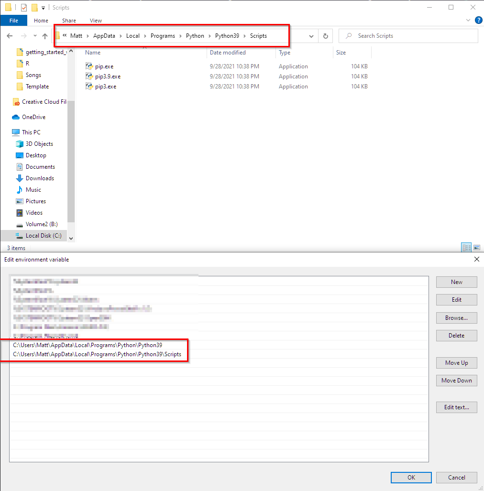
We can now go ahead and verify that we can call the Python.exe that lives in that directory from anywhere on the command line.
Lets open up a new command prompt and try it out.
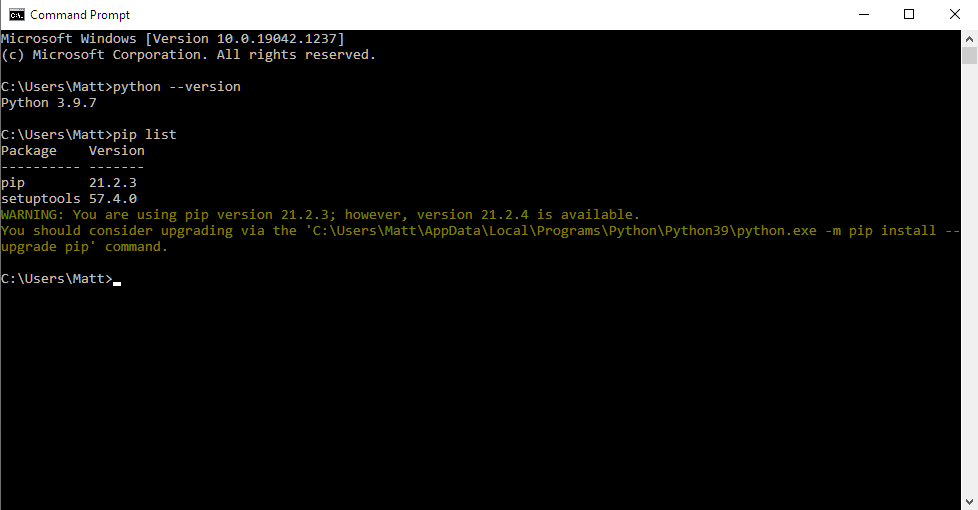
Now that python is configured and we also verified that pip worked by using the command "pip list" (all the packages in the Scripts folder). We can talk about virtual environments.
Click on the Environment Variables button shown above. Note the following screenshot for the variable we will need to add to...
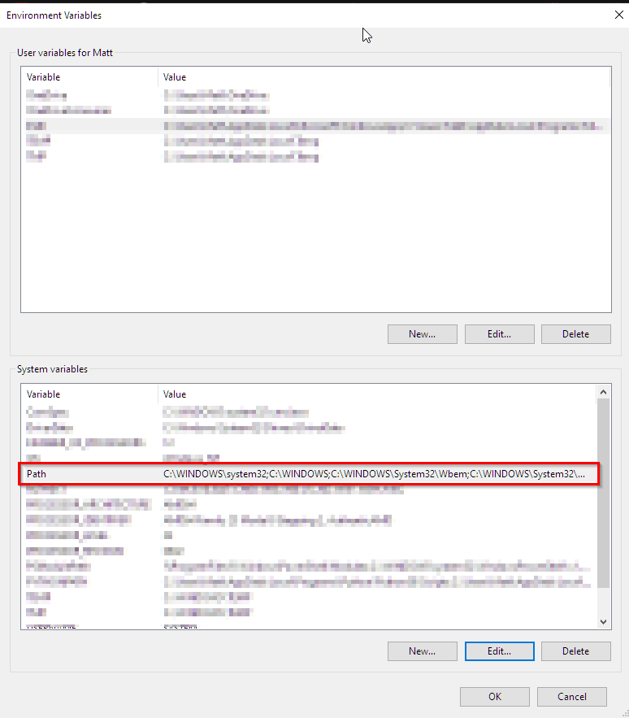
The variable we're interested in is the "Path" variable. Highlight the selection and click "Edit...".
Once the edit screen is up, click on "New" and paste in the two things we noted earlier, the directory that holds the python.exe and the Scripts folder...
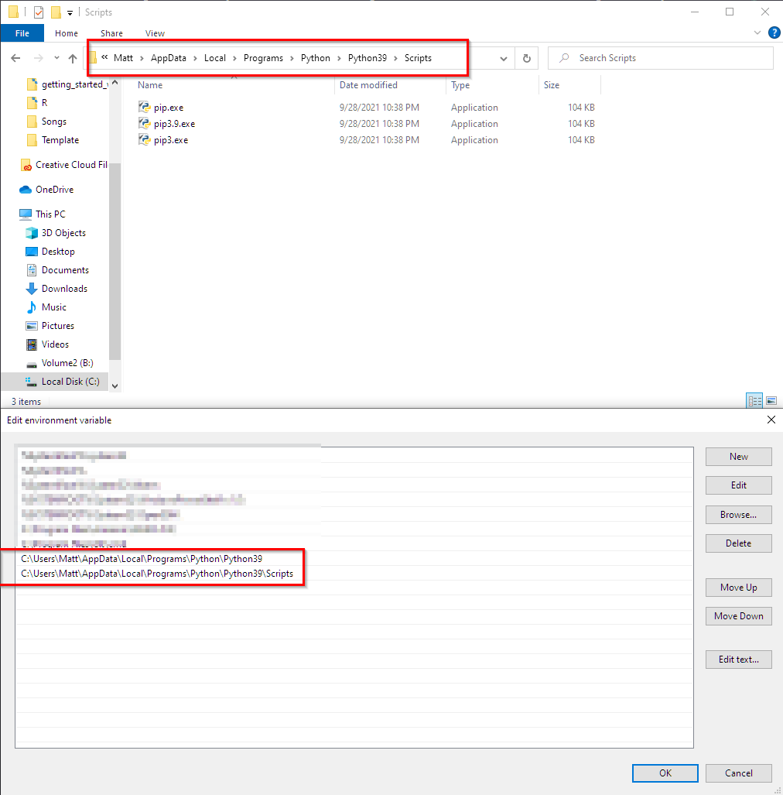
We can now go ahead and verify that we can call the Python.exe that lives in that directory from anywhere on the command line.
Lets open up a new command prompt and try it out.
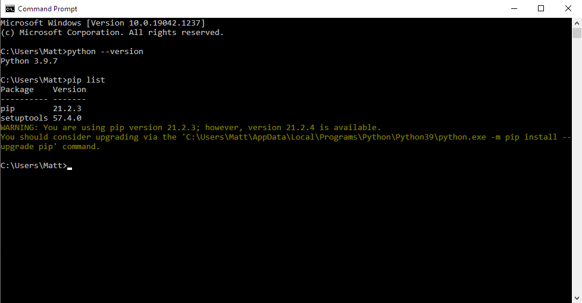
Now that python is configured and we also verified that pip worked by using the command "pip list" (all the packages in the Scripts folder). We can talk about virtual environments.
5. Explore the venv module
Now that we have a global python installation, we can go ahead and start creating environments for projects that we create.
You may be asking yourself, well I have python, why do I need a virtual environment and why can't I just start using it? Well technically you can,
to understand the benefit of virtual environments here is an example.
Lets say your co-worker asks you to work on a really cool python project thats he's been working on in his free time. You tell him sure and that you'll definitely check it out.
Upon cloning the project onto your machine and making some really cool changes which totally work on your laptop you go to show it off to him and tell him to check out your changes.
When running it, he sees a ton of errors flash up and you look like a total noob. But what happened here?
Well you didn't check what dependencies he was using (He installed, for example, the requests library to his machine 3 years ago and never updated it because newer versions would break his source code).
You knowing for a fact that you have the requests library installed in your global installation, say "why re-download it when I already have it?" However you now are using 2 different versions of the same library.
In his requirements.txt, there is version 2.0.0 and you have the latest 2.26.0. The code works on your machine because its backwards compatible, but his machine has no knowledge of the
fancy new techniques you employed using the latest version. So now comes to the solution.
You want to keep your new requests module because who wants to downgrade? But you also need a python installation linked up to the 2.0.0 version of the requests module.
In comes virtual environments.
Creating a new virtual environment will allow you to download and install a brand new set of packages totally separate from the global installation. Or any other environment for that matter.
Consider it like it's own little box where we're getting a fresh start with a new installation of python. It allows us to keep organized and not have conflicting dependencies. It is good
practice that whenever embarking on a new project, that we create a virtual environment for that project.
6. Create a virtual environment
We can create a directory for a virtual environment anywhere on our system. Some people like to keep all of their environments in a single folder next to each other. Personally, when I create a new project or directory for source code
I will go ahead and create another directory right next to it with the same name and a suffix of "_env".
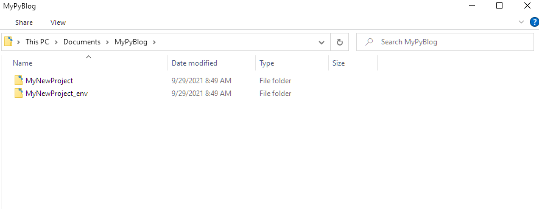
Every time we begin working in that project, we will need to activate that environment. But first, lets actually create it.
Open up your command prompt and type the following...
python -m venv PATH_TO_ENV_DIRECTORY
Some magic will run under the hood and we'll see that in the directory, we now have some stuff.
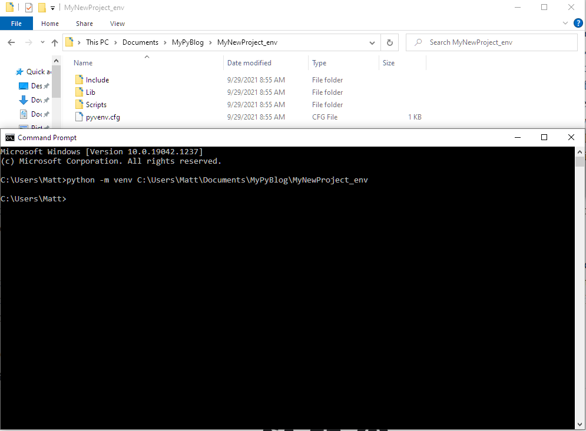
7. Activate the environment and install packages
Very similar to what we saw before is a Scripts folder. However in this case, no configuring of the PATH variable is needed (Thats actually implicitly happening when we activate it).
We can now activate this virtual environment by calling an exe within that Scripts directory that was created.
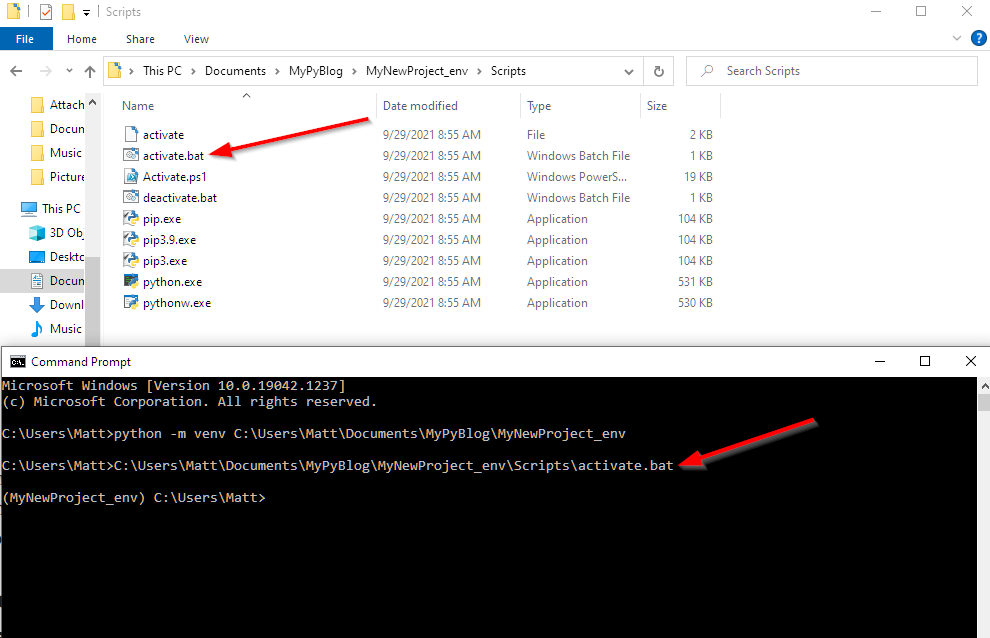
With our environment active, we are now working in a completely separate environment from our global installation. To demonstrate this, lets install something in our virtual environment here and show that we won't have access to it globally.
pip install requests
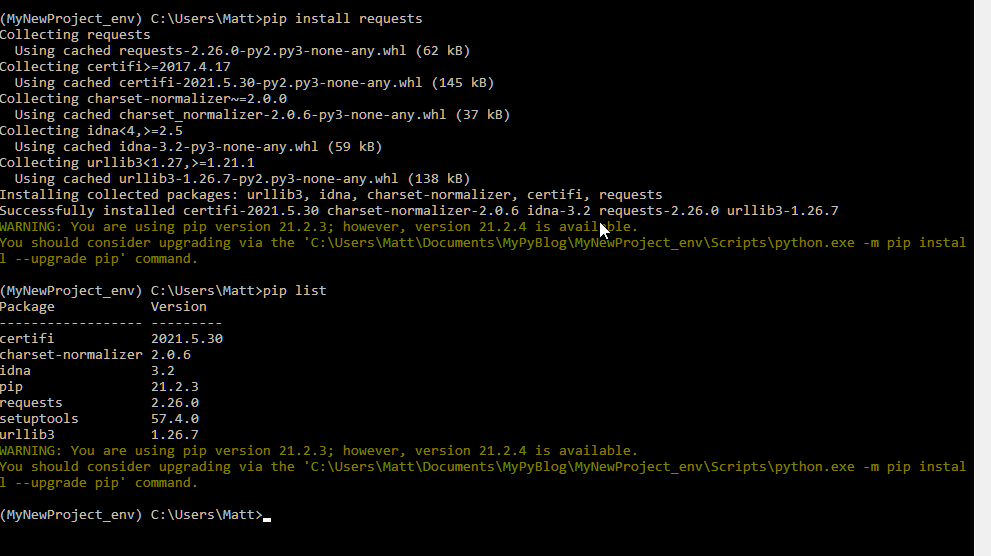
We can see by running "pip list" after the install completed that we have a module called "requests" that is available to use.
This can now be imported into some source code, and when in this environment, we can run that source code and this newly install requests module will be used.
In the following screenshot, I deactivate the environnement (going back to the global installation) and check out "pip list" again.
We will see that the requests module we installed is only available within that environment. Meaning we can have 2 different versions of the same module on our machine, just in different environments.
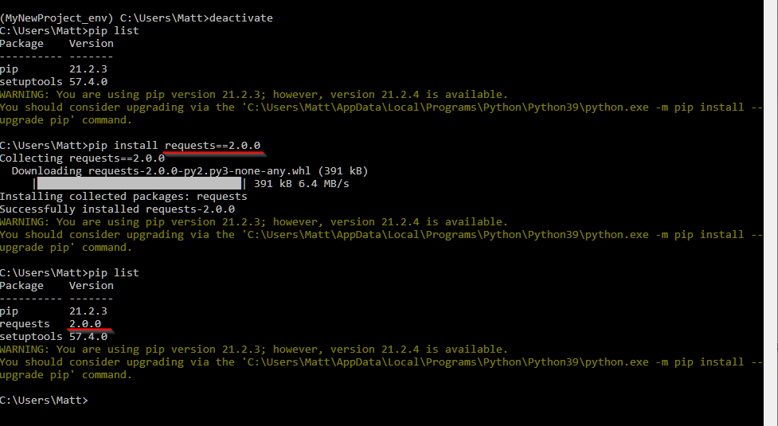